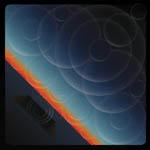
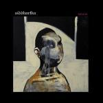
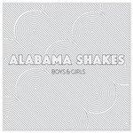

Music Reviews
-

The Mars Volta Noctourniquet
The Landmine Goes Pop (or, How a Prog Band Learned to Stop Worrying, Listen to Radiohead and Just Say “Yes.”)
Sean Caldwell reviews... -
M. Ward A Wasteland Companion
M. Ward, a name that has been so overshadowed by Zooey Deschanel's infectious celebrity, releases yet another album under his own name. Will it outshine the recent association with She & Him, or will his solo career remain reminiscent of his earlier albums?
David Hogg reviews... -
Madonna MDNA
The Queen of pop's back with her first collection of new material in four years. And while healthy first week sales showed how eagerly anticipated her work still is, the album's subsequent record-breaking drop down the chart's suggests that it perhaps isn't actually that good.
Mark Davison struggles to care either way... -

Siddhartha If It Die
Forget what you thought you were. Forget you name, forget your life. You are what you are. You are an entity of this world.
Indulge your mind... -

Nicki Minaj Pink Friday: Roman Reloaded
Will the real Nicki Minaj please stand up? On the evidence of Pink Friday: Roman Reloaded, that's not going to be happening any time soon.
Despite this, Joe Rivers can't stop listening to Starships... -

Alabama Shakes Boys & Girls
The much-hyped debut from the Jack White-endorsed quartet has finally arrived. How could we avoid asking whether or not it lives up to the hype?
Forrest Cardamenis answers... -
Mac DeMarco Rock and Roll Night Club
On his first solo effort, the Edmonton multimedia artist cross pollinates fifties twang and seventies avant pop with a sense of irreverence.
Juan Edgardo Rodríguez thought that was Alan Vega... -

Kishi Bashi 151a
Violin virtuoso and of Montreal member K. Ishibashi proves his talent for maximalist, joyful pop arrangements on his debut album.
Stephen Wragg reviews... -

High on Fire De Vermis Mysteriis
Even with a revised production output, the venerable sludge trio bring about a classic-by-design, tough as nails approach that's undeniably vital.
Juan Edgardo Rodríguez tries to limit the usage of the word riff... -
Cheers Elephant Like Wind Blows Fire
Declared, "Chew It Up, Spit It Out, Rock 'N' Roll", there may be more to it, however.
Matt Bevington reviews